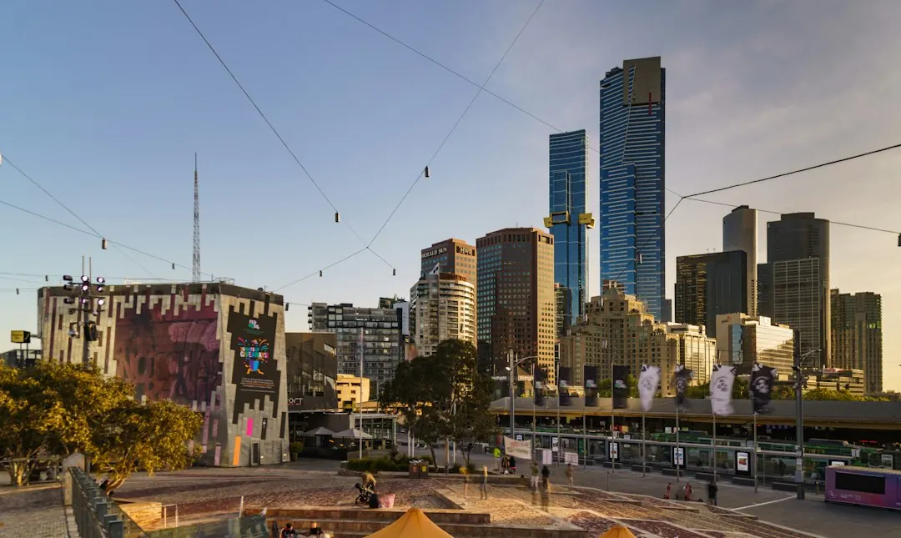

For homeowners comparing switchboard upgrades melbourne options, the practical questions are whether the existing board is suitable, which protection is needed and what the electrician's quote includes.
Switchboard Upgrades Melbourne Explained
Switchboard Upgrades Melbourne describes older Melbourne homes with ceramic fuse-type boards, including rewireable fuses, limited spare capacity and no safety switches. A board that has not been upgraded since the 1980s or earlier may not suit the electrical demand of a home using several modern appliances.
Repeatedly blowing fuses, circuits tripping when a heater and kettle run together, or the absence of RCD protection are useful details to report during an assessment. They do not identify the correct replacement by themselves, because the electrician also needs to inspect the wiring, circuits and the condition of the existing board.
Some older boards have asbestos backing. The material and its condition affect who can remove it. A trained electrician may handle a small, sound non-friable board within strict limits, while other removal and disposal work requires a licensed asbestos removalist under WorkSafe Victoria rules.
Choosing protection and capacity
The replacement decision usually turns on the property's supply, existing circuits and planned electrical equipment. A single-phase upgrade can replace old fuse carriers with circuit breakers and safety switches while leaving room for future circuits. Three-phase work is more involved and is scoped by the assessing electrician for larger homes, workshops or properties with higher-draw appliances.
An RCD safety switch is designed to cut power when it detects current leaking to earth. Circuit breakers provide circuit protection, while an RCBO combines overload protection and safety switch protection in one device. The quote should make clear which circuits receive which form of protection.
- Ask whether the property is currently single-phase or three-phase.
- Ask which circuits are being retained, altered or added.
- Ask whether solar, a smart meter or future appliances change the required board capacity.
- Ask how asbestos backing, if present, will be assessed and handled.
What changes the quoted cost
The published price ranges are broad because two boards that look similar from outside can require different work. A single-phase switchboard upgrade is typically $800 to $3,500 or more, depending on circuit count and existing wiring condition. A three-phase upgrade is typically $3,000 to $5,000 or more, depending on scope and complexity.
Use the quote to separate the board itself from the work needed around it. Useful line items include the number of circuits, the type of safety switches or RCBOs, changes to wiring, removal of an old fuse box, asbestos-related handling, and compatibility work for solar or a smart meter.
The service description states that the final quote comes from the assessing electrician and that the initial quote is provided without an obligation to proceed. A homeowner can therefore ask for the assessment findings and inclusions in writing before deciding.
Certification and Victorian requirements
Switchboard work in Victoria must be completed by a licensed electrician. The published guidance also notes that an A-grade electrical licence allows unsupervised installation work. Ask for the electrician's licence details and clarify who is responsible for the contracting business and completion documentation.
Once the work is finished, the electrician issues a Certificate of Electrical Safety. The guidance states that Victoria requires this certificate for electrical installation work. It also describes a main switchboard replacement as prescribed work, with an independent licensed electrical inspector checking it under Energy Safe Victoria's Certificate of Electrical Safety guidelines.
These documents are part of the finished job, not an optional extra. Keep the certificate with the property's electrical records and ask when it will be supplied if it is not handed over at completion.
Questions to settle before booking
A short, well-prepared enquiry helps the electrician scope the work accurately. Include the property type, whether the board uses ceramic fuses, any recurring tripping or fuse problems, the number of major appliances, and whether solar or a smart meter is planned.
Before accepting a quote, confirm the expected board configuration, circuit protection, treatment of asbestos-backed material, disposal arrangements, certification and inspection responsibilities. If the property needs three-phase power, ask which equipment or circuits require it and whether the quoted scope includes all associated work.
For a narrower comparison, the guide to switchboard replacement in Melbourne addresses the replacement decision alongside this upgrade-focused checklist.
- Describe the existing board. Provide details about ceramic fuses, recurring trips, missing RCD protection and planned electrical additions.
- Arrange an assessment. A licensed electrician checks the switchboard, wiring and circuits before preparing a quote.
- Review the scope. Confirm protection devices, circuit changes, asbestos handling, compatibility work and the quoted inclusions.
- Complete and document the work. After installation, obtain the Certificate of Electrical Safety and confirm any required independent inspection.
| Option | Typical published range | Questions to confirm |
|---|---|---|
| Single-phase upgrade | $800 to $3,500+ | Circuit count, wiring condition, safety switches and future capacity |
| Three-phase upgrade | $3,000 to $5,000+ | Scope, complexity, high-draw appliances and required circuits |
This guide covers Melbourne switchboard assessment, protection choices, quoted cost ranges, asbestos-backed boards and completion documentation.